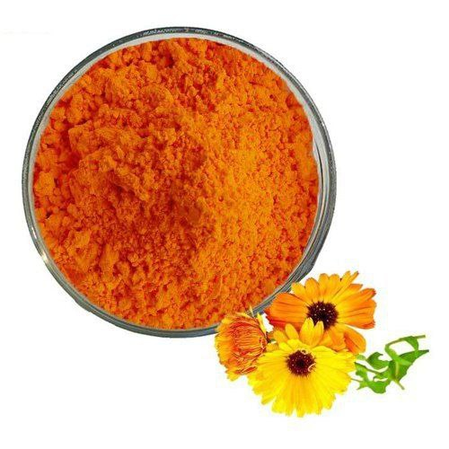
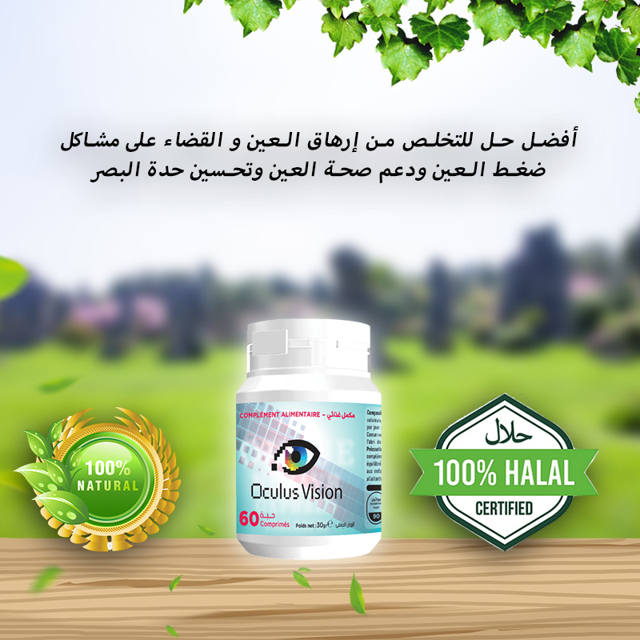

أفضل طريقة للتخلص من أجهاد العين ودعم صحة العين وتحسين حدة البصر.
تم النشر في | الكاتبة:سناء
مرحبا بالجميع!
بصراحة ، أنا لم أكتب مدونة سابقاً عن هذا الموضوع . لكن الموقف الأخير جعلني أخبر الجميع عنه ، لأن هذا يمكن أن يحدث لأي شخص.
ستكون المدونة حول مشاكل الرؤية وطرق التخلص من هذه المشاكل بطريقة طبيعية 100% وآمل أن تجد هذه المعلومات مفيدة.
عمري 40 سنة. ومؤخراً ، مع الوقت ، بدأت ألاحظ أن رؤيتي تتدهور. سواء كان هذا من كثرة الجلوس امام جهاز الكمبيوتر او الهاتف المحمول أو شيء وراثي - لا أعرف ، إنخفض مستوى رؤيتي بنسبة كبيرة . لقد أصبح نظري أسوأ بكثير حتي اني لا اري الاشياء البعيدة . النقوش على اللوحات الإعلانية ، أسماء الشوارع ، وجوه المارة - كل شيء كان غير واضح تمامًا.
واتضح أن سبب ضعف البصر هو شيخوخة الشبكية ، وكذلك ضعف عضلات العين. لقد نصحوني أصدقائي بمنتجات كثيرة للتخلص من مشاكل الرؤية و ضعف النظر . و لكن في النهاية أعطتني اختي مكملاً غذائياً إستخدمته لمدة أسبوعين تضمن بعض الحبوب .
كنت أقول كل مرة ان كل شيء سيكون على ما يرام ، لكن الشكوك بدأت تتسلل إلى رأسي تدريجياً بسبب انني بحثت عن هذا المكمل الغذائي في أماكن كثيرة و لكن لما اجده , و لقد أقربت العبوة التي لدي من هذا المكمل الغذائي ان تنتهي .

Oculus vision, أنها مصنوعة بمواصفات روسية .
ثم تذكرت. انه لقد وُصفت هذه الأقراص نفسها إلي اختي قبل أسبوعين فقط! لأنه قد بدأ نظرها أيضًا في التراجع ، ولكن ليس بشكل حاد مثل نظري ، لقد أخذت فقط أقراص Oculus vision .بنفسها و تخلصت من مشكلة إجهاد العين ، و كل مرة ألقي نظرة على شكل الأقراص التي استخدمها وأتساءل عما إذا كانت هذه نفس الأقراص التي تستخدمها اختي ام لا .
ما هو معنى إجهاد العين ؟
عندما تتدهور الرؤية تدريجيًا ، قد يكون من الصعب ملاحظة ذلك. يمتلك دماغنا الماكرة الوقت للتكيف مع التغييرات ، ولا يعاني الشخص من أي إزعاج معين ، وبالتالي لا يقلق. ومع ذلك ، هناك عدد من الأعراض التي يجب الانتباه إليها.
يعتمد التخلص من مشاكل العيون على نهج متكامل. من الضروري تنفيذ عدد من الإجراءات الوقائية ، ولا تنس التخلص من المشكلة في الوقت المناسب.
ما مدى خطورة ضعف البصر و ما هي الاعراض التي يجب عليك الإنتباه لها أولاً ؟
- في المرحلة الأولية تكون أعراض ضعف البصر خفيفة. معظم الأشخاص لا ينتبهون للأعراض ، والأعراض نفسها تأتي تذهب من حيت لأخر .
أهم الأعراض بالطبع التدهور المفاجئ للرؤية نفسها. فجأة يصبح من الصعب على الشخص التركيز على الأشياء البعيدة والقريبة. من الصعب الحفاظ على التركيز ، و الأشياء غير واضحة.
و هذه بعض الأعراض التي يمكن حدوثها إذا تم إهمال مشاكل العين :
- ازدواج الرؤية وخاصة في المساء
- إحساس "برمل" في العينين ، وعدم ارتياح
- ظهور "الذباب" ، دوائر قزحية اللون في العيون.
ما هي مكونات "OculusVision" ؟
يتكون هذا المنتج الرائع من مكونات طبيعية 100% .
- مستخلص اللوتين 
- السيليكا الغروية
- ستيرات المغنيسيوم
مستخلص اللوتين يمكن أن يساعد في تحسين صحة العين، حيث يقوم بحماية العين من الأضرار التي يمكن أن تسببها الأشعة فوق البنفسجية والتي يمكن أن تؤدي إلى مشاكل مثل المياه البيضاء والماكولار ديجنيريشن.
يتميز مستخلص اللوتين بأنه آمن وفعال، حيث لا توجد له آثار جانبية .
السيليكا الغروية هي عنصر معدني مهم لصحة الجسم، حيث تشكل جزءًا من العديد من الأنسجة في الجسم مثل العظام والأنسجة الضامة والغضاريف. كما أنها تعتبر مضاداً للأكسدة الطبيعي وتساعد في تقوية الجهاز المناعي والحفاظ على صحة الجلد والشعر والأظافر.
إن المغنيسيوم يعتبر مهمًا للصحة العامة و يكون مفيدًا للعين في بعض الحالات
أن استهلاك الأطعمة الغنية بالمغنيسيوم يمكن أن يساعد في تحسين صحة العين، حيث يمكن الحصول على المغنيسيوم من الخضروات الورقية الخضراء والمكسرات والحبوب والبقوليات والأسماك واللحوم او عن طريق تناوله في شكل مكمل غذائي كما هو الحال في OculusVision.
علاش نستخدم OculusVision ؟
- يساعد في مكافحة إجهاد العين
- الحفاظ على الرؤية الطبيعية من خلال عمل اللوتين والمكونات الأخرى
- دعم صحة العين
- تحسين حدة البصر بمضادات الأكسدة والمغذيات الوقائية مثل اللوتين
- بالإضافة إلى ذلك ، يساعد OculusVision في مكافحة إجهاد العين وإبطاء تطور التنكس البقعي المرتبط بالعمر.
كيف تحصل على OculusVision في الجزائر ؟
- عن طريق ملئ النموذج في الأسفل ببياناتك إسمك و رقم هاتفك
- بعد ذلك سوف يتم التواصل معك من قبل الشركة المصنعة لتأكيد عنوان الوصول
- بعد ذلك في خلال مدة قصيرة سوف يتم توصيل المنتج لك . و الدفع فقط عند إستلام المنتج .


نموذج الطلب الرسمي

السعر قبل التخفيض : 11998 DA
السعر بعد التخفيض : 5999 DA
عند شرائك دورة OculusVision

انا استخدم الهاتف بشكل مستمر و لذلك لدي مشاكل بعيوني و إجهاد متواصل بالعين و بعد إستخدامي لهذا المنتج الان استطيع ان اقول انه نافع جداً بحق . و شكراً لكم و انصح الجميع به
لقد طلبت هذا المنتج بالفعل و حتى قبل ان يكون هناك تخفيض و الأن لا استطيع الإستغناء عنه لأنه بالفعل مفعوله سريع و مذهل و ها هي صور العبوات لدي

لقد طلبته عن طريق ملء النموذج بالأعلى و الخدمة ممتازة و التوصيل سريع و أشكركم على هذا المنتج و أنا بدأت بالفعل في استخدامه

هل جرب أي شخص آخر هذه الأقراص ؟ كنت أرغب في الشراء ، أحتاج إلى أرائكم.

شكرا لمشاركتنا هذه المعلومات العظيمة
يسعدني معرفة منتجات مثل هذه المنتجات الرائعة و انا استخدمه بالفعل و أنصح به الجميع !

لقد طلبته بالفعل و أفضل شيء ان الدفع عند الإستلام و هذا جعل بداخلي طمأنينة

لقد طلبته بالفعل و في خلال وقت قصير حصلت عليه بالبريد . شكراً لكم سأجربه الأن
المدونون على الإنترنت


و 279 أكثر بدون صورة رمزية ...
لقد إستخدمت Oculus vision و كانت النتائج مذهلة و تحسن بصري في فترة مذهلة و قصيرة!